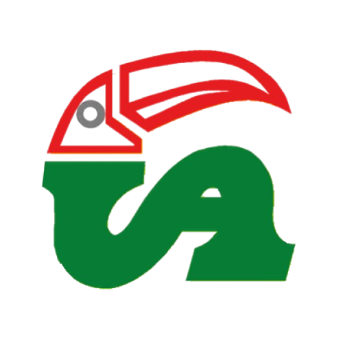
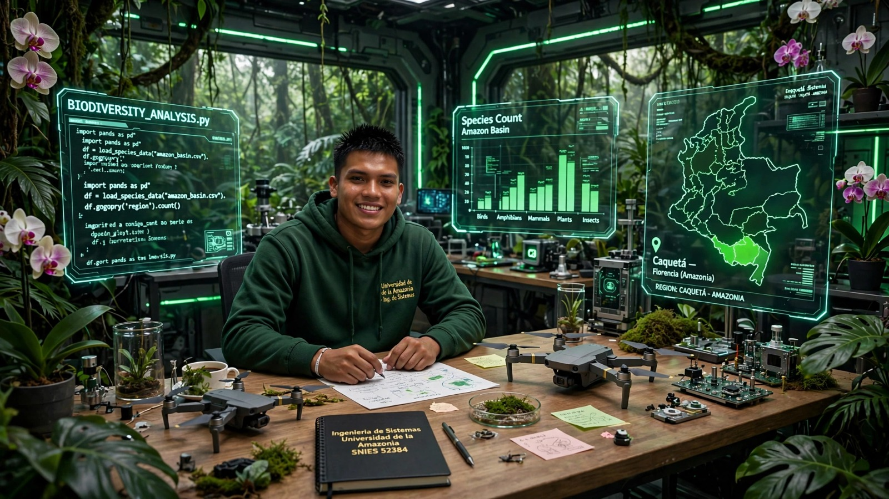
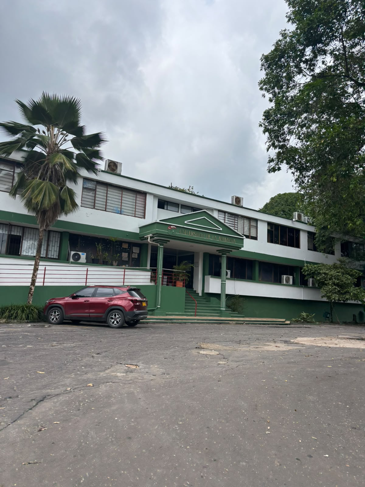
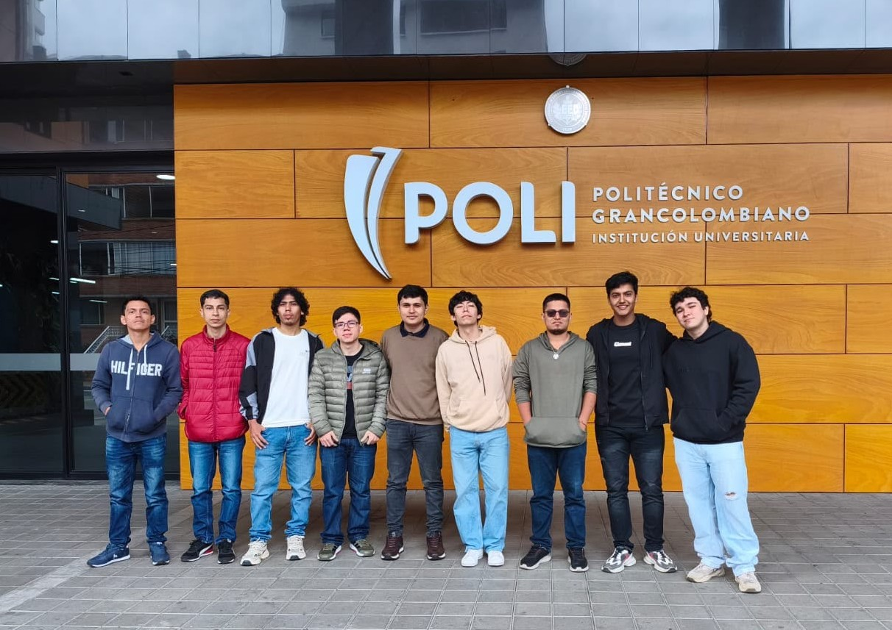
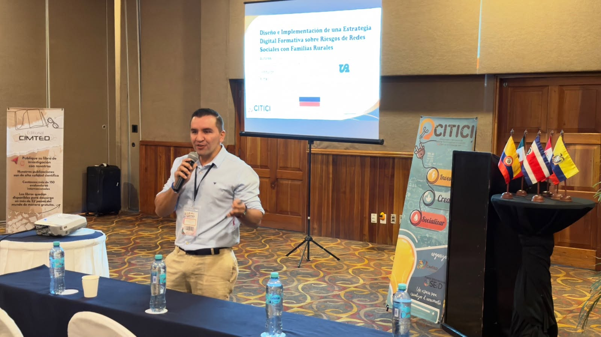
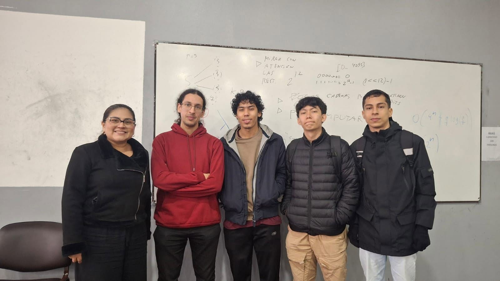

Misión
Forma profesionales íntegros capaces de innovar y solucionar problemas organizacionales mediante sistemas de información y tecnologías, contribuyendo al progreso socioeconómico y tecnológico de la región amazónica y del país.

Ingeniería de SistemasAprende a crear software y soluciones tecnológicas para la Amazonia. Programa presencial en Florencia, Caquetá.
Inscribirme
Forma profesionales íntegros capaces de innovar y solucionar problemas organizacionales mediante sistemas de información y tecnologías, contribuyendo al progreso socioeconómico y tecnológico de la región amazónica y del país.
Busca consolidarse en constante acreditación académica y social, destacándose por el liderazgo en la formación integral en los ámbitos académico, investigativo y humanístico.

El programa tiene 10 semestres. Mira todas las materias en el plan oficial.
Ver plan de estudios
Tres equipos participaron en la competencia, representando a la universidad con excelentes resultados.

Nuestro docente John Arley García Quintero presenta la ponencia: “Diseño e implementación de una estrategia digital formativa sobre riesgos de redes sociales con familias rurales”

Los estudiantes del Programa de Ingeniería de Sistemas participaron en el Training Camp 2026, realizado en Argentina, una experiencia que les permitió fortalecer sus conocimientos, compartir aprendizajes y vivir un espacio de formación e intercambio académico y tecnológico.
Coordinadora: Paula Andrea Chica Murcia
Teléfono: 320 454 1936
Ubicación: Campus Florencia, barrio El Porvenir, bloque administrativo, primer piso.